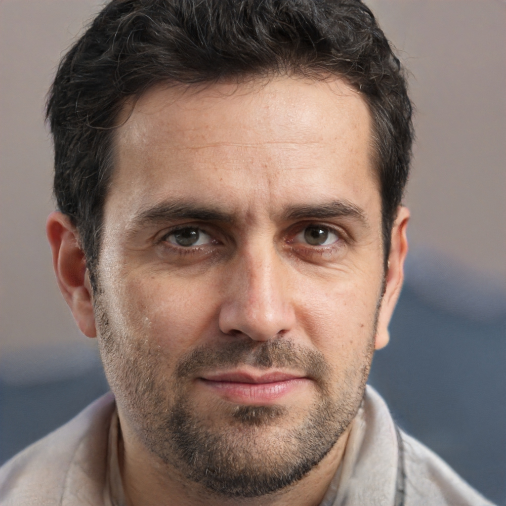

Nuestra organización gremial agrupa a todo el personal panadero y afines de los departamentos San Marín, Unión, Marcos Juarez, Tercero arriba, Río Segundo y las localidades de La Carlota, y Los Cisnes del Departamento Juarez Celman.
El objetivo primordial de este sitio, es mantener informado al afiliado en actualizaciones de escalas salariales vigentes, convenios colectivos, generación de boletas para los aportes y cualquier otro tipo de información relacionada al gremio y su actividad social.
Asimismo, permite facilitar al empleador las herramientas para hacer efectivo el pago de la cuota sindical.
Comision directiva
Claudio Antonio Rodriguez - Secretario general
Juana Barroso - Subsecretario general
Marcelo Rodriguez - Tesorero
Mirko Gonzales - Secretario de actas
Julia Diaz - Vocal Titular
Monica Meneses - Abogado